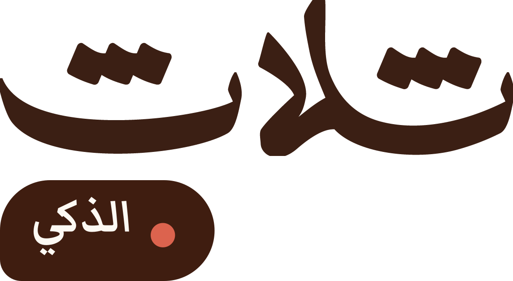
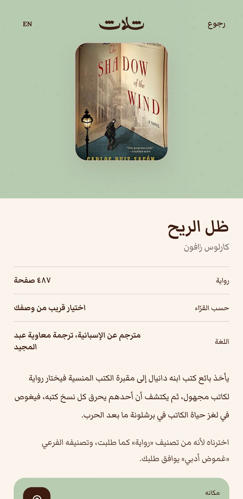
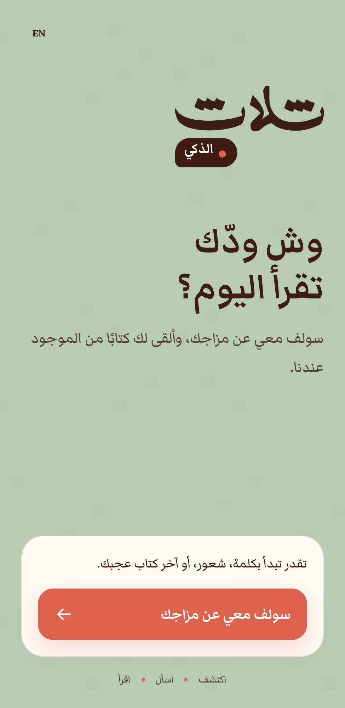
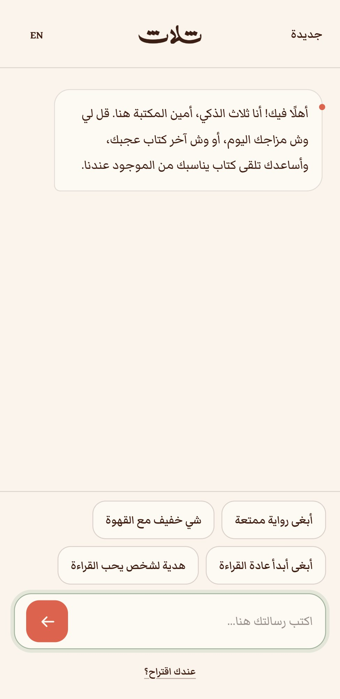
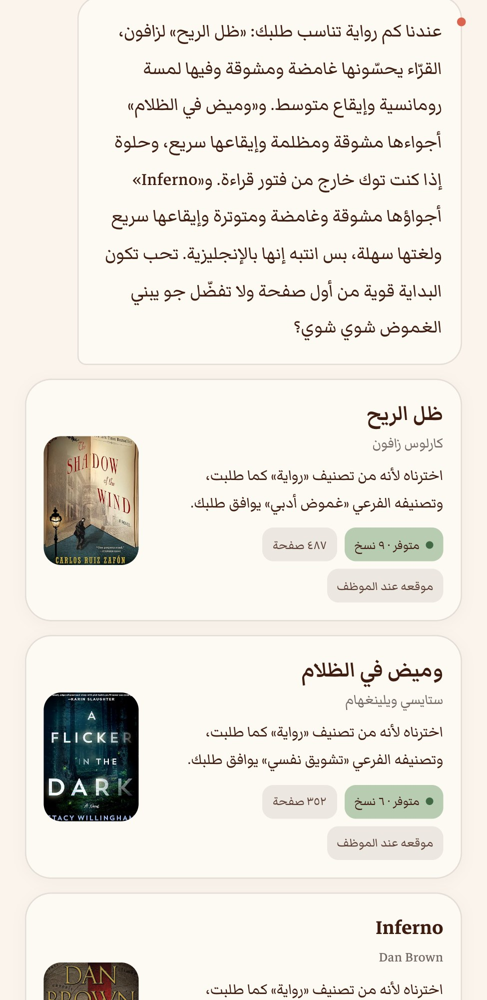
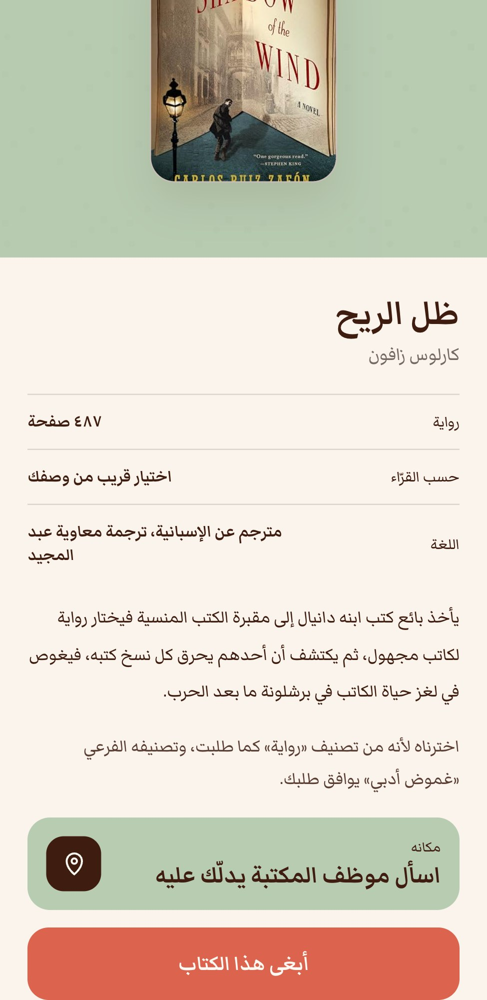
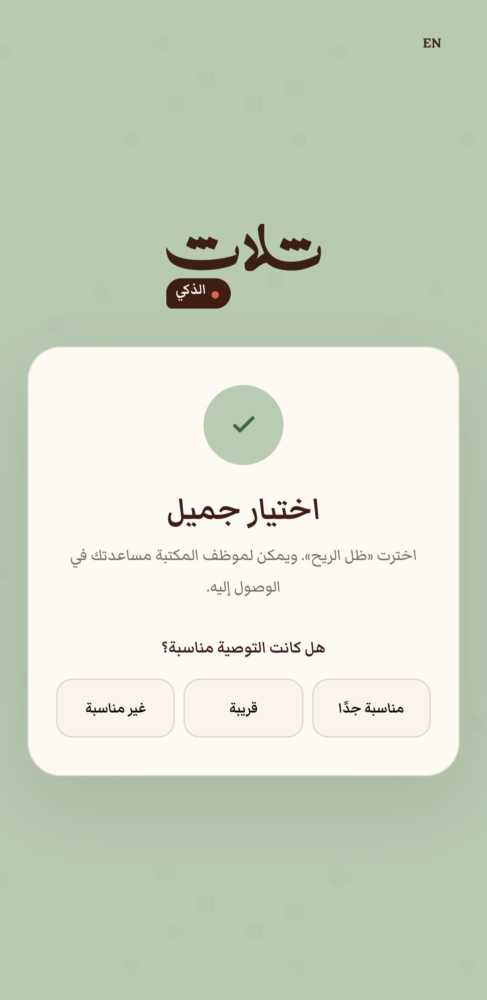

يحوّل رغبة القارئ في القراءة، مهما كانت غامضة، إلى كتاب متوفر على الرف في دقائق، عبر محادثة عربية قصيرة.


كثير من زوّار المكتبات يدخلون متحمسين للقراءة، ثم تربكهم الرفوف الكثيرة والعناوين غير المألوفة، فيخرجون بلا كتاب أو يكتفون بالأشهر. «ثلاث الذكي» يمنح هذا القارئ مرشدًا يحاوره بلغته، ويرشده إلى كتاب مناسب له ومتوفر فعلًا في المكتبة.
رمز QR داخل المكتبة يفتح التجربة على جوال الزائر مباشرة، بلا تطبيق يُحمَّل ولا حساب ولا اسم.
يكتب ما يريده بلهجته: مزاجه، موضوع يهمّه، آخر كتاب أعجبه، أو هدية لشخص يحب القراءة.
يحصل على ٣–٤ كتب متوفرة الآن، مع سبب ترشيح كل كتاب ونبذة عنه، ثم يختار ويقيّم التوصية.
واجهة عربية أولًا، مصممة للجوال وبهوية المكتبة نفسها، تبدأ بسؤال بسيط: «وش ودّك تقرأ اليوم؟». وتتوفر كذلك باللغة الإنجليزية.
البدايةسؤال واحد وزر واحد

المحادثةاقتراحات جاهزة لمن لا يعرف كيف يبدأ

الترشيحاتكتب متوفرة الآن مع سبب اختيار كل كتاب
تفاصيل الكتابنبذة ولغة العمل وطوله
«أبغى رواية غامضة تشدني من أولها»، «شي خفيف مع القهوة»، «كتاب عن الأندلس»، «مو كئيبة ولا رومانسية». يفهم المزاج والطول والنوع والموضوع، وما يريد القارئ تجنّبه.
كل ترشيح مرتبط بمخزون المكتبة لحظة السؤال. وإذا طلب الزائر كتابًا غير متوفر أو نوعًا لا نملكه، يقول ذلك أولًا ثم يقترح الأقرب مع وجه الشبه.
اللقطات من النسخة الحالية للتطبيق (٠٫٩ التجريبية) وبيانات المكتبة الحقيقية.
لا يبحث «ثلاث الذكي» في الإنترنت وقت السؤال. كل كتاب في المخزون تُبنى له مسبقًا «بطاقة» تصف تجربة قراءته من مراجعات القرّاء، ثم يعتمد عليها الترشيح فورًا.
لكل مؤلف سجل بأسلوبه المعروف، فيُجاب «أبغى شيئًا يشبه ماركيز». وكل كتاب مربوط بما يشبهه، وبأعمال كاتبه، وبأجزاء سلسلته، وببديل أخف أو أقصر.

القرار عند القارئالنبذة، والتوفر، وزر «أبغى هذا الكتاب»، ومكانه يدلّه عليه الموظف

بعد الاختيارتقييم من ضغطة واحدة يقيس جودة التوصية
لا حساب ولا اسم. المحادثة تُمسح عند البدء من جديد، والاختيارات تُحفظ بلا أي بيانات تعريفية.
اكتمل الإصدار ٠٫٩ التجريبي على مخزون مكتبة ثلاث الفعلي، بنسختين للتركيب على ويندوز وماك. اختُبرت المحادثة بأربعين قارئًا افتراضيًا بأمزجة وأذواق مختلفة، وأُصلح ما ظهر فيها.
الأرقام حتى ٧ أكتوبر ٢٠٢٦. وللكتالوج ٤٬٧٥٥ غلافًا، و٨٢٦ كتابًا قُرئت مراجعات قرّائها حتى الآن والعمل عليها مستمر.
تشغيل النسخة على جهاز المكتبة، وتدريب الموظفين، وتحديد أقسام الرفوف.
تجربة داخلية مع موظفي المكتبة عبر رمز QR، وجمع ملاحظاتهم.
فتح التجربة لزوار المكتبة، مع تحديث أسبوعي للمخزون وقياس الرضا.
إتاحة النموذج لمكتبات ومساحات قراءة أخرى.